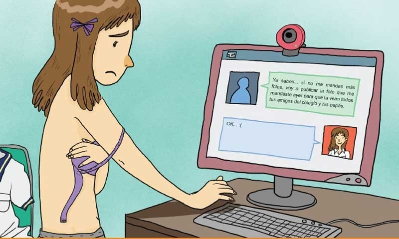

El Sexting
Su nombre es un acrónimo de 'sex' o sexo y 'texting' o escribir mensajes. Consiste en enviar
mensajes,
fotos
o vídeos de contenido erótico y sexual personal a través del móvil mediante aplicaciones de
mensajería
instantánea o redes sociales, correos electrónicos u otro tipo de herramienta de comunicación.
Habitualmente se suele realizar de manera íntima, entre dos personas, aunque pueda llegar a manos de
muchos
otros usuarios si no se respeta esa intimidad. Lo que por desgracia es bastante habitual.
Pero lo que tendría que ser un juego erótico y algo placentero, podría convertirse en un verdadero
drama
si
no consideramos los riesgos a los que nos exponemos.
Conocer estos riesgos nos ayuda si queremos realizar esta práctica, y de ser así, con quién, cómo y
cuando
hacerlo. Al igual que a tomar medidas, sobre todo, en relación a los más pequeños.
Tipos de Sexting
Existen dos tipos de sexting que hay que tener presentes y conocer en detalle:
Sexting activo: consiste en el envío de imágenes comprometidas. Antes de enviar ese contenido,
conviene consultar el apartado de Consejos.
Sexting pasivo: consiste en recibir fotografías, vídeos u otros contenidos de índole sexual. Si en
las imágenes recibidas aparece un menor, lo mejor será eliminar dicho contenido y avisar sobre ello
a las personas correspondientes. La difusión, producción y distribución de imágenes sexuales
procedentes de menores está castigado por la ley por posesión de pornografía infantil.
Riesgos del Sexting
El sexting puede ser divertido y emocionante Pero conviene saber que el sexting conlleva una serie de
riesgos. Cuando envía una imagen o un vídeo a través de su celular o computadora, una persona pierde
el
control de dichos archivos.
Según advierten los expertos, estos son algunos de los principales peligros que entraña el sexting:
- Difusión no autorizada de contenido. Una persona que recibe textos, imágenes y vídeos puede difundirlos y compartirlos con terceros sin el consentimiento del emisor de los mensajes. Algo que podría afectar muy negativamente a la salud –por ejemplo, trastornos psicológicos o daño a la autoestima–, privacidad y reputación de este último.
- Dificultades en relaciones futuras. Además, uno de los riesgos de compartir esta clase de contenido son las repercusiones en las relaciones. La desconfianza y la falta de privacidad afectan a la capacidad de establecer conexiones emociones saludables en el futuro.
- Pérdida de control del contenido. Asimismo, los textos, imágenes y vídeos de carácter sexual podrían caer en manos de otras personas si se pierde un dispositivo que no cuenta con las medidas de seguridad apropiadas.
- Suplantación de identidad. Relacionado con el punto anterior, el material íntimo compartido puede ser utilizado para la suplantación de identidad. Los ciberdelincuentes lo usan de manera fraudulenta para comprometer la seguridad personal y financiera de las víctimas.
- Ciberacoso, grooming y sextorsión. El sexting puede derivar en ciberacoso, grooming y casos de sextorsión, riesgos de los que ofrecemos contenidos específicos a nuestros lectores.
- Revenge porn. Del mismo modo, esta práctica puede dar lugar al denominado revenge porn. En este caso, las exparejas difunden imágenes o vídeos por despecho o venganza.
- Consecuencias legales del sexting. Por último, involucrar a menores en el sexting tiene consecuencias legales. Conviene recordar que las leyes castigan la posesión, distribución o creación de material sexualmente implícito de menores de edad.

Consejos para Prevenir el Sexting
Para prevenir las posibles consecuencias negativas asociadas al sexting, es crucial considerar los siguientes consejos de prevención:
- Educación digital. La clave para prevenir el sexting empieza con una sólida educación digital para concienciarse sobre la importancia de proteger la privacidad en línea, conocer los riesgos asociados y comprender las implicaciones legales.
- Comunicación abierta en la familia y en los centros de enseñanza. De igual manera, es esencial mantener un ambiente de comunicación abierta en el hogar y en los centros educativos. Una adecuada educación sexual y un diálogo constante ayudan tanto a evitar riesgos como a detectarlos.
- Uso consciente de los dispositivos electrónicos. Ya sea a través de padres o educadores, o por propia voluntad, hay que establecer límites de tiempo para usar los dispositivos electrónicos. Es una forma de prevenir el sexting. Y también la ciberadicción y el phubbing.
- Configuración de privacidad. Hay que aprender a configurar las opciones de privacidad en las redes sociales y las aplicaciones de mensajería. Los perfiles han de estar configurados de tal manera que sólo las personas de confianza tengan acceso a la información más íntima.
- Borrado de datos. Asimismo, es imprescindible asegurarse de que las aplicaciones que se usan facilitan borrar los contenidos compartidos.
- Sentido común y pensamiento crítico en línea. Como sucede con otros contenidos, es crucial utilizar el sentido común y pensárselo dos veces antes de compartir textos, imágenes o vídeos de índole sexual.
- Respeto y consentimiento en Internet. Ya sea en la vida normal o en Internet, cualquier relación ha de basarse en el respeto y el consentimiento mutuos. Respetar la privacidad de los demás es crucial para construir relaciones saludables.
- No aceptar presiones. Otras personas pueden incitar a un individuo a sextear de manera irresponsable. En estos casos hay que aprender a decir «no». No se debe participar en aquellas actividades que generen incomodidad o sean riesgosas.
- Conocimiento de las leyes locales. Finalmente, antes de sextear es indispensable conocer las repercusiones legales y penales asociadas al sexting. Al difundir contenido íntimo de otra persona se puede estar incurriendo en un delito. Y es preciso saber que el mismo se agravará si afecta a un menor, ya que podría considerarse pornografía infantil.

¿Qué Hacer si te Encuentras en una Situación de Sexting no consesuado?
Si te encuentras en una situación de sexting no consensuado o acoso en línea, es importante:
- Buscar apoyo emocional de un adulto de confianza.
- Considerar la posibilidad de reportar el incidente a las autoridades pertinentes.
- Recordar que no estás solo y que hay recursos disponibles para ayudarte.
Recuerda que la prevención y la educación son fundamentales para abordar el sexting de manera efectiva y promover un entorno en línea seguro y respetuoso.